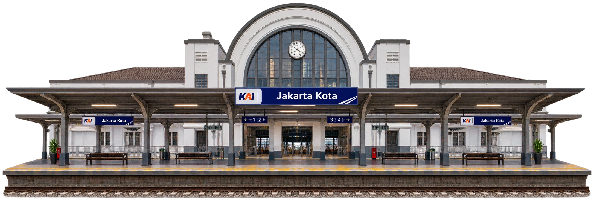
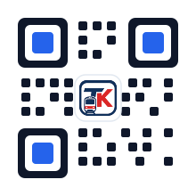

Teman Kereta menyalakan alarm dua stasiun sebelum tujuan kamu, lalu memantau posisi KRL sampai kamu turun. Gratis, tanpa iklan.

Jakarta Kota
Pantau posisi KRL yang sedang kamu tumpangi beserta rincian rutenya.
Stasiun berikutnya dan sisa stasiun
Perkiraan waktu tiba
Urutan stasiun sampai tujuan
Waktu tempuh, jarak, dan kecepatan
Posisi kereta di peta bergerak mengikuti penumpang di dalamnya.
Ponsel berbunyi dan bergetar dua stasiun sebelum tujuan.
Coba suara alarmnya
Rute tercepat, jumlah transit, dan estimasi tarif sebelum berangkat.
Tanyakan kepadatan kereta ke penumpang lain sebelum naik.
Toilet, musala, lift, mesin tiket, dan area parkir tiap stasiun.
Aplikasi independen, ringan, dan tanpa iklan.
Geser untuk melihat setiap layar.
Stasiun rumah, stasiun kantor, dan kereta berikutnya langsung terlihat.
Rute harian rumah dan kantor
Jadwal dari stasiun favorit

Daftar akun sekali di awal, setelah itu tinggal pakai.
Unduh berkas APK di halaman ini, lalu pasang.
Tentukan stasiun asal dan tujuan.
Aplikasi memberi tahu sebelum kamu tiba.

Unduh sekarang, pakai pada perjalanan berikutnya.

Tanpa biaya • Tanpa iklan